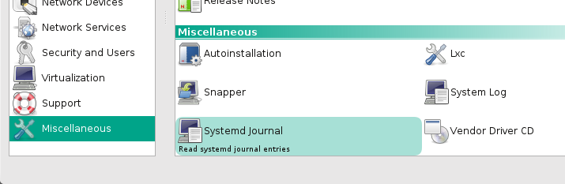

If a developer creates a YaST module and nobody install it, does the module have any feature? As explained in the Packaging Portal of the openSUSE wiki, packaging is the task of building and bundling software with meta data such as the name, a description and a list of dependencies necessary for the software to run. This is done so the final users can use a package manager to conveniently install, remove or upgrade the software.
As you have already learned, the YaST ecosystem is relatively complex with different components split over several repositories. When it comes to packaging and distribution, that results in a full network of packages. Fortunately, dealing with such network and creating new packages is a piece of cake thanks to the openSUSE Build Service.
In order to proceed, you need an account in the openSUSE Build Service and the client tool, called "osc", installed. The openSUSE project uses an advanced single-sign-on mechanism, so if you already have an account in the openSUSE wiki, Bugzilla, forum or any other piece of the openSUSE infrastructure, you already have an account for OBS. Otherwise, you can create one in a matter of seconds following the "sign up" link in the openSUSE Build Service page.
Installing and configuring the osc client is even easier, you only need to execute the following command in your local copy of yast-journalctl.
{% highlight bash %} rake check:osc {% endhighlight %}It will check for the presence of the client tool and for a proper basic configuration, providing instructions on how to fix any incorrect or incomplete aspect. Follow the instructions after running the command as many times as needed until you get the following message.
{% highlight text %} * Done. Everything looks good. {% endhighlight %}Now that we have osc installed, we can build our RPM package by running the following task.
{% highlight bash %} rake osc:build {% endhighlight %}Let's take a look to the output from top to bottom. We can see that it first checks for osc.
{% highlight text %} * Starting osc check... * Done. Everything looks good. {% endhighlight %}Then it ensures a license is present.
{% highlight text %} Skipped files: [...] Copyright found in these files: [...] Copyright detected as not needed in these files: [...] All files have proper license reference. {% endhighlight %}Afterwards, it runs the syntax check.
{% highlight text %} * Starting syntax check... * Done {% endhighlight %}And finally it contacts with the openSUSE Build Service to start building the package. And is in that moment when everything seems to fall apart.
{% highlight text %} Server returned an error: HTTP Error 404: Not Found Error getting meta for project 'YaST:Head' package 'yast-journalctl-tutorial' YaST:Head/yast-journalctl-tutorial {% endhighlight %}It's trying to poll OBS for a package living in the YaST:Head project, which is out of our control, and called with the name of the directory of our local copy. If you are not familiar with the concept of project in Open Build Service, it's probably a good moment to briefly check the introductory videos available in the Open Build Service home page.
You want your software to be available as a package called yast2-journalctl hosted in your home project (or any other project under your control) in the openSUSE instance of OBS. So let's adjust the configuration according.
{% highlight bash %} git checkout master {% endhighlight %}After running the command above you'll see a new file called RPMNAME with a self-explanatory content and goal. In addition, the Rakefile has been modified to include some new configuration options, as explained in the documentation of the packaging_rake_task gem.
{% highlight ruby %} require "yast/rake" Yast::Tasks.configuration do |conf| # The package does not live in the official YaST:Head OBS project conf.obs_project = "home:an_obs_username" # Default target for osc:build conf.obs_target = "openSUSE_13.2" end {% endhighlight %}That will cause the packaging tasks to always target the home project of the user an_obs_username in OBS trying to build a package for openSUSE 13.2. Edit the file and change the values to point to the distribution you are currently running and to whatever project you like. Obviously, you need permissions to create and update packages in the project.
The rake tasks are designed to work on an existing OBS package, so you'll need to create an empty yast2-journalctl package in the project of your choice. If you already have the project checked out in your computer, you can simply use "osc mkpac". If is not the case, the easiest way to create an empty package is using the OBS web interface. Simply visit the project (there is a direct link at the top right of the page if you want to use your home project) and click "create package". Write "yast2-journalctl" in the name and whatever you want in the other fields.
If it's the first time you use OBS, there is something else you need to do in your project. Configure the repositories it will create packages for. Visit the project's page again, click on "repositories" and then on "add repositories". Add at least the corresponding repository for the system you are currently running (e.g. openSUSE 13.2), matching the above value for obs_target.
We are ready. Let's try again.
{% highlight bash %} git add Rakefile git commit -m "Adapted configuration in Rakefile" rake osc:build {% endhighlight %}Once again, if it's the first time you build a package for openSUSE, there can be some rough edges. If you get an error like this…
{% highlight text %} The build root needs packages from project 'openSUSE:13.2'. Note that malicious packages can compromise the build result or even your system. Would you like to ... 0 - quit (default) 1 - always trust packages from 'openSUSE:13.2' 2 - trust packages just this time ? Well, good good bye then :-) aborted. {% endhighlight %} …add this at the end of your osc configuration file (~/.oscrc) and try again. {% highlight ini %} trusted_prj=openSUSE:13.2 {% endhighlight %}After a successful run, you'll see a line with a package name like:
{% highlight text %} /var/tmp/build-root-openSUSE_13.2/home/abuild/rpmbuild/RPMS/noarch/yast2-journalctl-0.1.0-1.noarch.rpm {% endhighlight %}That's your first packaged YaST module! You can install that package in any openSUSE system in order to make possible to execute the following command.
{% highlight bash %} /sbin/yast2 journalctl {% endhighlight %}Now that you are sure that your package works. Let's make it available for everybody.
{% highlight bash %} rake osc:commit {% endhighlight %}Let's say you are so proud now that you call your mum and ask her to try your new module. She goes to software.opensuse.org and searches for "journalctl" using the big package search box at the top of the page. There is your package! Just a few clicks and she has the module installed. But then she calls you back. "I installed the package but I can't find anything in my system menu and I don't see any new icon in YaST".
You could tell her to use the command line… but she is your mother, she gave you the life, sure you can give her an simple icon. "Don't worry mum, I'll fix it".
In order to run applications, most users are used to simply click on a menu entry. That is possible because all Linux desktop environments, as well as YaST, support the .desktop standard file format. Adding an icon to run your module from both the system menu and the YaST main window as as easy as including a desktop file in your package. Just paste the following content into a file called "src/desktop/journalctl.desktop".
{% highlight ini %} [Desktop Entry] Type=Application Categories=Settings;System;Qt;X-SuSE-YaST;X-SuSE-YaST-System; X-KDE-ModuleType=Library X-KDE-HasReadOnlyMode=true X-SuSE-YaST-Call=journalctl X-SuSE-YaST-Group=Misc Icon=yast-messages Exec=/sbin/yast2 journalctl Name=Systemd Journal GenericName=Read systemd journal entries StartupNotify=true {% endhighlight %}In addition to adding the file to your local copy, you must actually include it in the package description. That can be done in the "files" section of yast2-journalctl.spec that should end up looking similar to this.
{% highlight spec %} %files %defattr(-,root,root) %{yast_dir}/clients/*.rb %{yast_dir}/lib/journalctl %{yast_desktopdir}/journalctl.desktop {% endhighlight %}Of course, adding a new file implies increasing the package version, which in turns means updating the version number in the spec file and adding a changelog entry describing the update. Even for those simple tasks, there are helper tools at your disposal. To increase the version number simply execute the following.
{% highlight bash %} rake version:bump {% endhighlight %}To create, and subsequently update, the changes file you can use osc from the "package" directory of your local copy.
{% highlight bash %} cd package osc vc {% endhighlight %}The above command will open your default text editor that you can use to write a changelog entry similar to this.
{% highlight text %} ------------------------------------------------------------------- Mon Feb 29 01:02:03 UTC 2014 - user@example.com - Added entry to system menu and YaST initial screen. - Version 0.1.1 {% endhighlight %}Now that you have added the desktop file and updated the package according, you could be tempted to run "rake osc:build" or "rake osc:commit" right away. If you do it, it will fail warning you that the package cannot be built because you forgot to add your changes to git. First things first.
{% highlight bash %} git add src/desktop package git commit -m "Added desktop file. Version 0.1.1" {% endhighlight %}Looks like we are ready to release a new version of our package. Let's try first to build it locally first by running "rake osc:build" and take a look to the output.
{% highlight text %} * Starting osc check... * Done. Everything looks good. * Starting syntax check... [...] * Done [...] rake aborted! Missing license: src/desktop/journal.desktop:11: error: copyright missing (in first 10 lines) {% endhighlight %}The license check failed but adding a license to a desktop file feels almost as senseless as software patents. So let's configure the check:license rake task to skip that file. Just edit the Rakefile to add desktop files to the skip_license_check configuration option. The final Rakefile should look similar to this.
{% highlight ruby %} require "yast/rake" Yast::Tasks.configuration do |conf| # The package does not live in the official YaST:Head OBS project conf.obs_project = "you:already:changed_this" # Default target for osc:build conf.obs_target = "openSUSE_13.2" # Desktop files are just metadata conf.skip_license_check << /.*desktop$/ end {% endhighlight %}That should be enough. Let's try again.
{% highlight bash %} git add Rakefile git commit --amend --no-edit rake osc:build {% endhighlight %}Now everything should work straightforward and the the command above should output a line with your new package file ready to install.
{% highlight text %} /var/tmp/build-root-openSUSE_13.2/home/abuild/rpmbuild/RPMS/noarch/yast2-journalctl-0.1.1-1.noarch.rpm {% endhighlight %}After installing it, you can run YaST and check that your module is now listed in the "miscellaneous" section of the user interface.
You are ready to publish your new version and call your beloved mother again!
{% highlight bash %} rake osc:commit {% endhighlight %}After following the seven steps on this tutorial, you should already have enough knowledge to dive confidently into YaST development. You can always count with the help and support from the welcoming YaST community that you will find in the mailing list and IRC channel linked from the YaST home page, which also gathers all the constantly evolving documentation and guidelines.
Now you are at the wheel. Enjoy the journey!